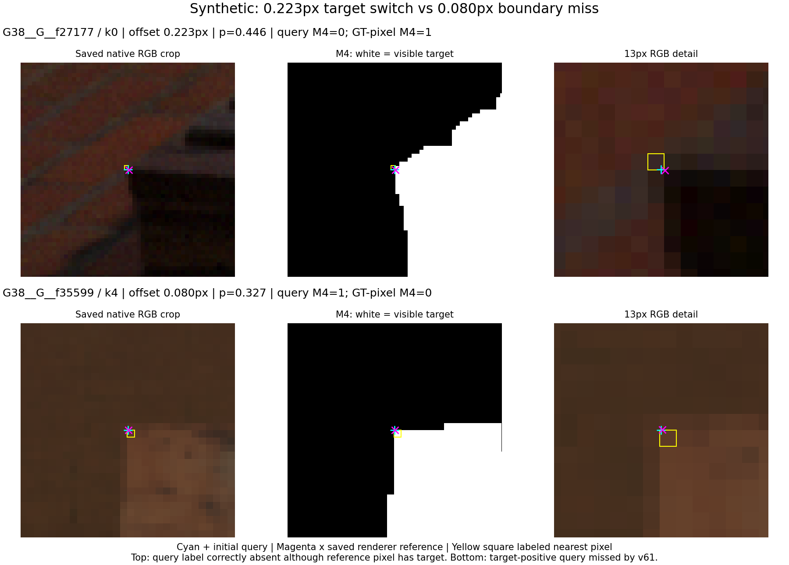
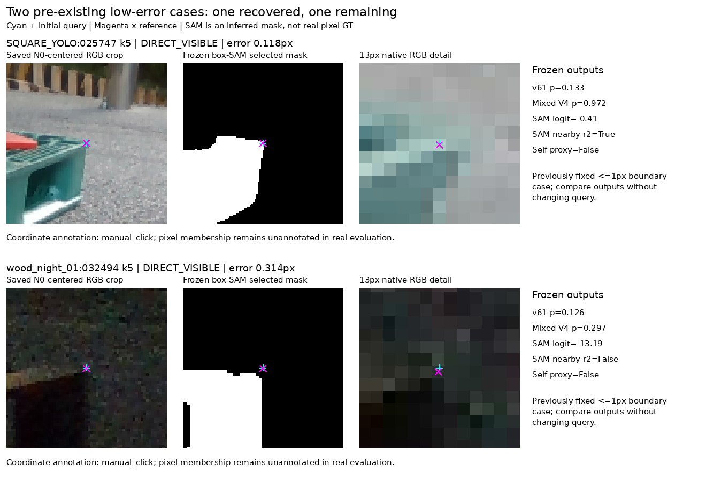
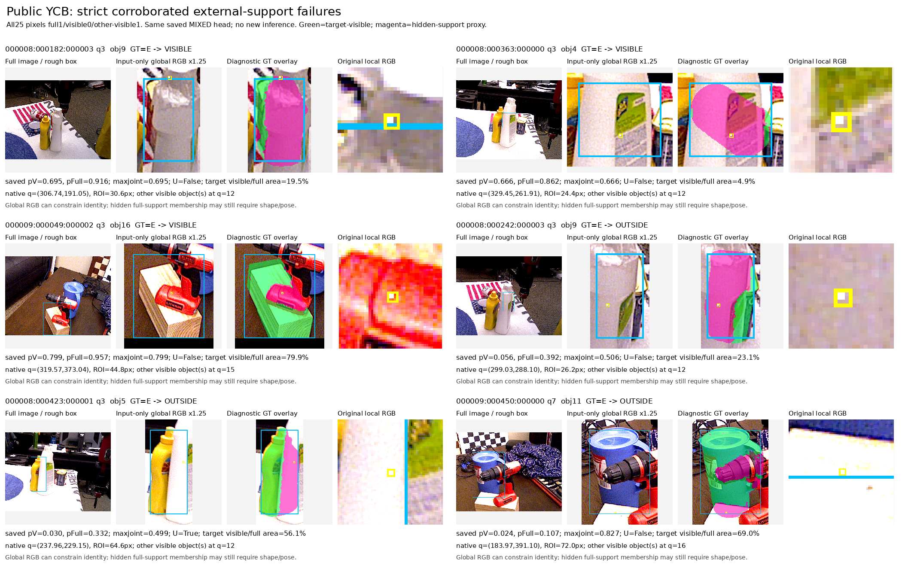
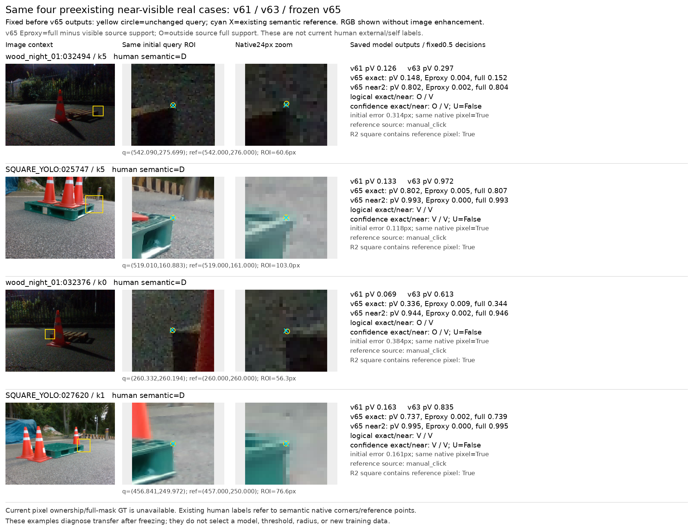
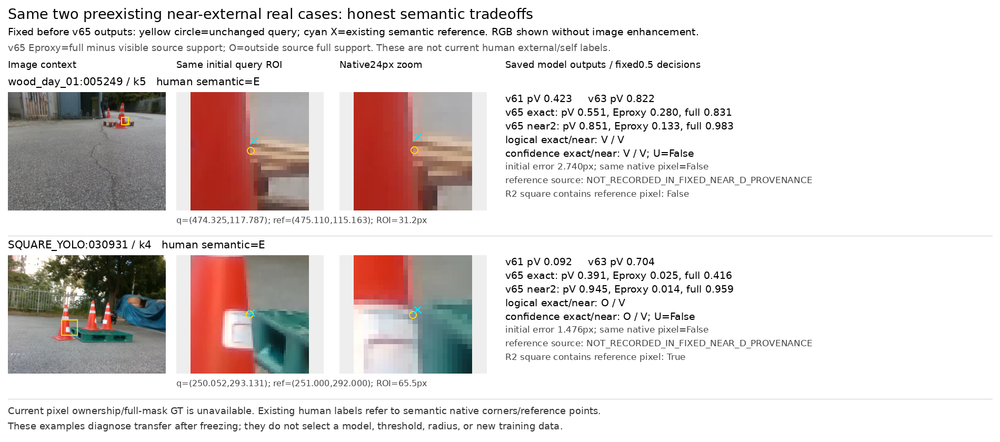

팔레트 query visibility: 원인 진단과 공개 실사 학습
목표 차이와 실제 분류 실패가 함께 있습니다. 공개 source에서 좋아진 v65가 팔레트에서는 v63보다 나빠져 전이 개선 주장은 보류합니다. 후보·문턱은 source에서 동결했고 팔레트 결과로 재선택하지 않았습니다.
좌표 오차가 3px 이하인데도 실패하는 이유
v61의 정답은 의미상 코너가 보이는가가 아니라 초기 query의 반올림된 한 픽셀에 대상의 visible mask가 있는가입니다. 0.223px 차이에서도 reference=대상/query=배경인 합성 사례가 있어 두 목표가 달라집니다. 반대로 0.080px이며 query가 실제 target pixel인데 v61이 놓친 사례도 있습니다.
합성 VAL의 ≤3px exact-positive 409점 중 171점을 놓쳤고, 그중 163점(95.32%)은 경계였습니다. 내부 recall은 172/180=95.56%, 경계는 66/229=28.82%입니다. 따라서 이를 모두 실사 전이 실패라고 해석할 수 없습니다. 실사에서는 같은 정수 픽셀인 35점 중 30점도 absent였으나, target-instance pixel mask 정답이 없어 목표 불일치와 전이 실패의 비율을 확정할 수 없습니다.

이 원인 진단은 저장 출력과 원래 마스크를 재집계한 결과이며 새 학습이 필요하지 않았습니다.
현재 팔레트 평가: v61·legacy·v63·새 v65
같은 초기 query에서 보이는 점 D와 외부 가림 E를 비교했습니다. TP/FN은 D, FP/TN은 E 기준입니다. legacy의 보류 D/E는 FN/TN에 섞지 않았으며 recall 분모에는 남깁니다. v63·v65는 각각 source에서 먼저 동결한 합성+공개 YCB+SAM head입니다. v65는 보임 recall이 v61보다는 높지만, v63보다 목재43.02→31.17%, 정사각형53.48→46.52%로 낮아졌습니다.
| 유형 | 모델 | TP | FN 판정 | FP | TN | 보임 precision | 보임 recall 전체GT | E recall 전체GT | 보류율 |
|---|
| WOOD_PRIMARY105 | v61 | 145 | 471 | 0 | 29 | 100.00% | 23.54% | 100.00% | 0.00% |
| WOOD_PRIMARY105 | legacy | 448 | 65 | 2 | 23 | 99.56% | 72.73% | 79.31% | 16.59% |
| WOOD_PRIMARY105 | V65_MIXED_GLOBAL | 192 | 424 | 2 | 27 | 98.97% | 31.17% | 93.10% | 0.00% |
| SQUARE118 | v61 | 115 | 416 | 2 | 59 | 98.29% | 21.66% | 96.72% | 0.00% |
| SQUARE118 | legacy | 207 | 254 | 1 | 60 | 99.52% | 38.98% | 98.36% | 11.82% |
| SQUARE118 | V65_MIXED_GLOBAL | 247 | 284 | 5 | 56 | 98.02% | 46.52% | 91.80% | 0.00% |
| WOOD_PRIMARY105 | MIXED_CONTEXT_RGB_SAM_V4 | 265 | 351 | 3 | 26 | 98.88% | 43.02% | 89.66% | 0.00% |
| SQUARE118 | MIXED_CONTEXT_RGB_SAM_V4 | 284 | 247 | 8 | 53 | 97.26% | 53.48% | 86.89% | 0.00% |
수동 좌표·오차≤3px·보이는 점만
| 유형 | 모델 | 회수/전체 | 보임 recall |
|---|
| WOOD_PRIMARY105 | v61 | 42/153 | 27.45% |
| WOOD_PRIMARY105 | legacy | 116/153 | 75.82% |
| WOOD_PRIMARY105 | MIXED_CONTEXT_RGB_SAM_V4 | 80/153 | 52.29% |
| WOOD_PRIMARY105 | V65_MIXED_GLOBAL | 62/153 | 40.52% |
| SQUARE118 | v61 | 43/223 | 19.28% |
| SQUARE118 | legacy | 89/223 | 39.91% |
| SQUARE118 | MIXED_CONTEXT_RGB_SAM_V4 | 154/223 | 69.06% |
| SQUARE118 | V65_MIXED_GLOBAL | 132/223 | 59.19% |
수동 좌표·≤3px인 보이는 점 recall도 v63→v65가 목재52.29→40.52%, 정사각형69.06→59.19%로 떨어졌습니다. 이 값은 semantic visibility 전이 평가입니다. 현재 223장은 과거 반복 노출이 있어 새 독립 최종 시험이라고 부르지 않습니다. legacy는 과거 별도 real-CAL 학습 모델이며 합성·공개 실사만 쓴 모델과 학습 조건이 다릅니다.

위 그림은 기존v63까지의 고정 사례입니다. 새v65의 동일 crop 비교는 아래 별도 진단에 연결합니다.
가까운 점의 비보임은 무엇을 뜻했는가
수동 좌표·≤3px인D376점 중v65 exact false-absence182개는 OV143 / OO16 / U23이었습니다. EV·EE는0입니다. OV는 정확한 위치는 full support 밖으로 예측했지만2px근방 visible support는 있다는 뜻입니다. 모델이 외부 가림으로 분류한 실패와 다릅니다.
| 유형 | N | 정확위치·근방 모두보임VV | 정확위치밖·근방보임OV | 둘다밖OO | 보류U |
|---|
| WOOD_PRIMARY105 | 153 | 62 | 74 | 9 | 8 |
| SQUARE118 | 223 | 132 | 69 | 7 | 15 |
실사용 해석에서 OV를 외부 가림으로 합치지 말고 위치·경계 불확실 신호로 남겨야 합니다. 이 출력만으로 실제 query pixel이 배경이라는 사실이나 물리 코너의 가림 여부가 입증되지는 않습니다. 근방 출력만 사용하면 가려진 코너 옆의 visible 면도 양성으로 세기 때문에 E 오류가 늘 수 있습니다.
자기 가림은 별도 목표
기존 주석에서 비교 가능한S는 목재136점입니다. 같은slot D626/S136의 아래 표는 semanticS를 binary absent와 비교한 전이 지표이며, visible/full mask head가 semanticself를 학습했다는 뜻이 아닙니다. 정사각형의 같은S 평가표는 주석 support가 없어 만들지 않습니다.
| 모델 | D: TP | D: FN 판정 | S: FP | S: TN | 보임precision | D recall전체GT | S대비absence recall | 보류율 |
|---|
| v61 | 154 | 472 | 115 | 21 | 57.25% | 24.60% | 15.44% | 0.00% |
| legacy | 448 | 75 | 13 | 118 | 97.18% | 71.57% | 86.76% | 14.17% |
| V65_MIXED_GLOBAL | 202 | 424 | 121 | 15 | 62.54% | 32.27% | 11.03% | 0.00% |
| V65_MIXED_GLOBAL+GEOMETRY | 192 | 434 | 15 | 121 | 92.75% | 30.67% | 88.97% | 0.00% |
| MIXED_CONTEXT_RGB_SAM_V4 | 275 | 351 | 123 | 13 | 69.10% | 43.93% | 9.56% | 0.00% |
v65 raw는S대비absence15/136, 기존 초기pose의 별도 기하proxy를 적용하면121/136입니다. 대신 보이는D10개를 추가 억제합니다. 이 기하값은 새PnP나 학습결과가 아니며, 잘못된 초기pose에서는 틀릴 수 있습니다.
외부 가림과 대상 밖을 분리한 source 검증
V=visible target support, E=full support가 있지만 visible support는 없음, O=full support 밖입니다. E는 2D mask 기반 proxy이며 semantic self 가림 정답이 아닙니다. exact와 native 5×5 근방을 6개 가능한 joint 상태로 학습합니다. 확신 판정은 joint 최대확률≥0.5, 그 아래는 U입니다. binary 보임 비교는 별도로 pVisible≥0.5를 유지합니다.
v64는 대상 조건을 다른 물체로 바꿨을 때 96.28%에서 보임 확률 방향이 맞았지만, YCB exact E의 확신 판정 precision/recall은 65.15%/8.07%였습니다. v65는 같은 local query에 전체 대상 crop과 visible/full shape supervision을 더한 95,508 parameter 모델입니다. 학습 예산은 후보당 2,000 update, source query NLL로만 checkpoint를 고릅니다.
| v65 후보 | source | query joint NLL | E precision | E recall 전체GT | 보류율 | 혼동: GT V/E/O 행, 예측 V/E/O/U 열 |
|---|
| SYNTH | SYNTH | 0.79749 | 56.94% | 44.09% | 11.19% | [[510, 2, 151, 38], [6, 41, 7, 39], [126, 29, 675, 118]] |
| SYNTH | YCB | 2.21887 | 35.44% | 34.71% | 34.25% | [[417, 263, 281, 610], [91, 185, 72, 185], [74, 74, 647, 301]] |
| MIXED | SYNTH | 0.75312 | 57.32% | 50.54% | 12.69% | [[499, 1, 153, 48], [7, 47, 7, 32], [109, 34, 664, 141]] |
| MIXED | YCB | 0.93880 | 74.39% | 22.89% | 25.69% | [[1160, 18, 82, 311], [251, 122, 13, 147], [170, 24, 538, 364]] |
SOURCE 비교 개선 통과
| 미리 고정한 YCB 지표 | v64 | v65 MIXED | 판정 |
|---|
| E_precision | 65.15% | 74.39% | 통과 |
| strict_E_recall_all_GT | 20.45% | 57.39% | 통과 |
| O_recall_all_GT | 43.07% | 49.09% | 통과 |
| overall_confidence_coverage | 69.12% | 74.31% | 통과 |
위 비교 판정은 source checkpoint 선택 규칙을 바꾸지 않습니다. v64는 source-only이며 v65는 자격 통과 뒤 동결한MIXED 한 후보만223장에 추론했습니다. 현재 평가의 human-E90점에서 confidence 출력은 V7 / E_PROXY19 / O22 / U42입니다. 사람의 보이는 점도 O 예측이 목재344/616·정사각형236/531로 많습니다. 따라서 binary absent를 외부 가림 판정이라고 부를 수 없습니다.
R2 근방 출력은 보임 recall81.33%/79.66%로 높지만 E recall68.97%/57.38%로 낮아집니다. 이 값은 다른 목표의 진단이며 primary를 사후 교체하지 않았습니다.

전경 물체를 target으로 잘못 소유시키는 V 오류와, target이 안 보인다는 판단은 맞지만 뒤의 target 영역을 복원하지 못하는 O 오류를 분리했습니다. 대상이 거의 전부 가려지면 전체 RGB와 SAM box만으로도 대상 identity와 숨은 경계를 특정하기 어렵습니다.
어떻게 진행해야 하는가
현재 평가 데이터와 분리된 공개 실사를 학습에 쓰는 방향은 타당합니다. 공식 BOP YCB-V의 instance visible/full mask로 학습하고, 기존 합성으로 팔레트 외형을 유지합니다. 다만 일반 탁상 물체에서 좋은 결과가 나와도 팔레트 전이를 보장하지는 않습니다.
다음 데이터 보강은 공개 팔레트 실사와, 대상 소유권이 확실한 실사 합성 가림입니다. 실제 target visible 영역 위에 별도 물체를 합성하면 새로 가린 픽셀을 정확히 알 수 있습니다. 원래 숨은 영역은 UNKNOWN으로 유지해 모르는 정답을 만들지 않아야 합니다. 공개 팔레트 후보의 라이선스·촬영 계열 중복·SAM pseudo-label 독립성을 먼저 확인하고, 현재 223장과 분리된 새 평가 집합을 봉인해야 합니다.
실제 출력은 보임 / 외부 가림 근거 / 대상 밖 / 보류로 분리하고, semantic 자기 가림은 기존 초기 pose의 순수 기하 proxy를 별도 표시합니다. 이 과정에서 좌표나 PnP를 고치지 않았습니다.
현재223장으로 fit·calibration·문턱·checkpoint를 선택하지 않았습니다. source YCB rough box가 annotation 기반 jitter라는 조건 차이와 global64의 해상도 한계도 결과에 함께 남겼습니다.
사전에 고정한 실제 crop의 v65 판정

정확한 pixel mask 정답은 없습니다. 같은 nearest pixel인 수동 기준점 사례라 큰 초기 좌표 오차로 설명하기는 어렵지만, semantic 주석을 pixel ownership 정답으로 바꾸어 부르지는 않습니다.
고정 사례 수치·출처고정한 외부 가림 사례의 tradeoff

square의 binary absent 개선도 E판별이 아니라 O출력이었습니다. wood는false-visible이 남았습니다. 초기점이reference와 다른 픽셀인 경우에는 가림 경계의 목표 차이도 함께 봐야 합니다.